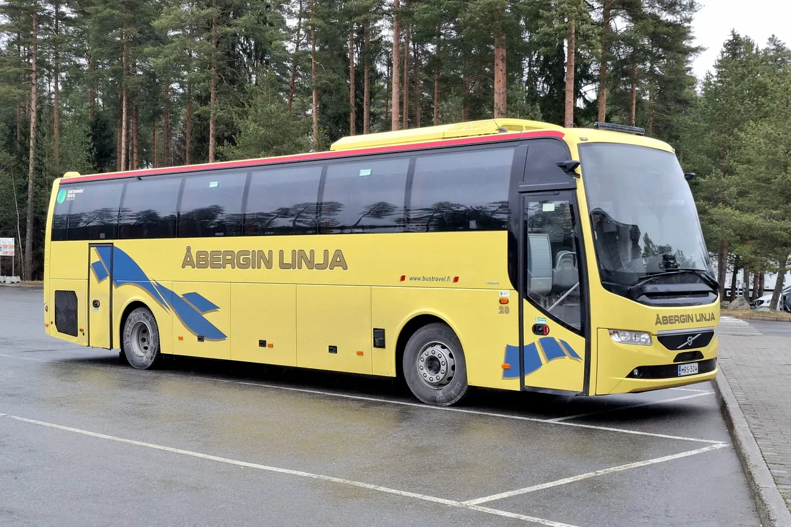

Etusivu / Kalusto
Bussi kaikkiin tarpeisiin
Kalusto
Noin 30 bussia, 9–60 paikkaa, sekä kaupunkibusseja tapahtuma- ja esteettömiin kuljetuksiin. Volvon, Scanian ja Mercedeksen linja-autoja.

- noin 30bussia kuuluu kalustoon tällä hetkellä
- 9–60paikkaiset bussit kaikkiin tarpeisiin
- 30–40kuljettajaa sesongista riippuen
- EspooVarikolta hoidetaan kätevästi pääkaupunkiseudun ja läntisen Uudenmaan liikennettä.
Tutustukaa busseihin
Katsokaa bussit ulkoa ja sisältä
Volvon, Scanian ja Mercedeksen linja-autoja 9–60 matkustajalle.
13–16paikkaa
Pikkubussi
- Pöytäryhmä
- Ilmastointi
- Jääkaappi
- Buscafe
- Turvavyöt
Lyhyt kuljetus pikkubussilla maksaa alle 200 euroa.
30–34paikkaa
30-paikkainen
- Sohva- tai pöytäryhmä
- WC
- Ilmastointi
- USB/220V
- Jääkaappi
- Buscafe
- Turvavyöt
49–54paikkaa
50-paikkainen
- WC
- Ilmastointi
- USB/220V
- Pöytäryhmä
- Buscafe
- Turvavyöt
- Wifi
57–60paikkaa
Iso bussi
- WC
- Ilmastointi
- USB/220V
- Turvavyöt
Bussissa voi olla kerralla jopa 60 matkustajaa, jolloin päästöt per matkustajakilometri jäävät huomattavan pieniksi.
49paikkaa
Honka-bussi
- WC
- 3 pöytäryhmää
- Isot tavaratilat
- Ilmastointi
FC Honka -teippaus ja musta-keltainen sisustus.
Bussien varustetaso vaihtelee, joten varmistakaa omat tarpeenne tilauksen yhteydessä.
Tapahtumat ja shuttlet
Kaupunkibussit tilausajoon
Kaupunkibussit soveltuvat moneen tilausajoon, esimerkiksi tapahtumakuljetuksiin, shuttlebusseiksi ja liikuntaesteisille.
- Tapahtumakuljetukset
- Shuttlebussit
- Liikuntaesteisten kuljetukset
Hyvä tietää
Pienet asiat, jotka tekevät matkasta mukavan
tilausajoista ajetaan Euro6-luokan dieselajoneuvoilla. Euro6 on ympäristöystävällisin EU-päästönormi.
välein sisäilma vaihtuu kokonaisuudessaan ulkoa otettavan raittiin ilman avulla.
Ilmanpuhdistin useissa turistibusseissa. Neutralisoi mikro-organismeja, bakteereja ja allergeeneja. Testattu Espanjan puolustusvoimien tutkimuslaitoksen INTA:n vaativissa testeissä.
Lähes kaikissa busseissa, kuten koulukyydeissä vaaditaan.
Sustainable Travel Finland -merkki ensimmäisenä bussiyhtiönä.
Kysymykset
Usein kysyttyä
Tilausajomyynti, Petri Nissinen
040-539 4976Kiireellisissä tapauksissa tilausajopäivystys 0400-505 713.
Kuinka iso ryhmä mahtuu kyytiin?
Busseissa on 9–60 paikkaa. Omalla kalustolla hoidetaan useamman sadan henkilön kuljetukset samaan aikaan, ja yhteistyökumppaneiden avulla jopa tuhansien.
Onko esteettömiä busseja?
Kaupunkibusseja on tapahtuma- ja esteettömiin kuljetuksiin.
Onko busseissa turvavyöt ja alkolukot?
Lähes kaikissa busseissa on koulukyydeissä vaadittavat alkolukot sekä turvavyöt.
Kuinka nopeasti saan tarjouksen?
Tarjouksen bussikuljetuksesta saa jopa parissa tunnissa. Toimisto palvelee arkisin 8–16, ja tarjouspyynnön voi tehdä lomakkeella, sähköpostilla tai puhelimella.
Kertokaa matka, me teemme tarjouksen
Lomake kysyy kaikki tarpeelliset tiedot tarjouksen antamista varten. Toimisto palvelee arkisin 8–16 puhelimitse ja sähköpostitse.